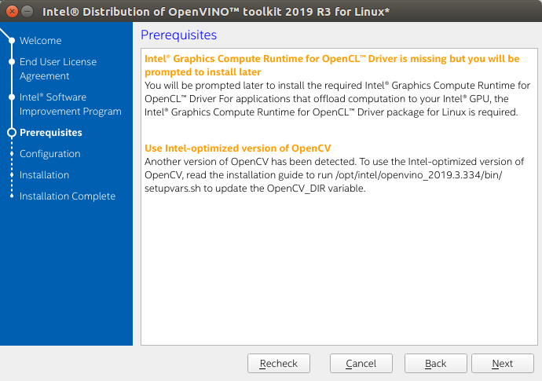
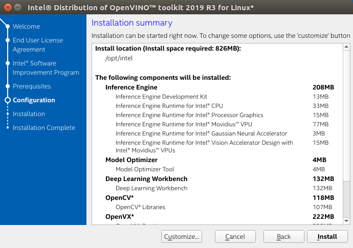
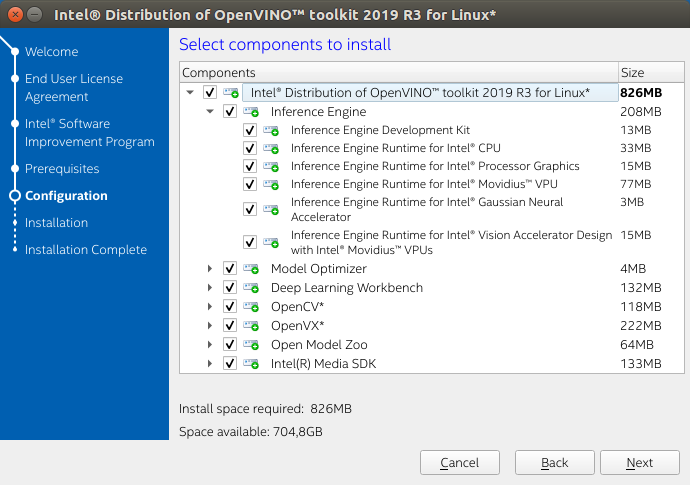
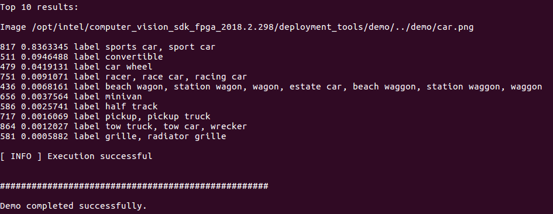

NOTES:
- Intel® System Studio is an all-in-one, cross-platform tool suite, purpose-built to simplify system bring-up and improve system and IoT device application performance on Intel® platforms. If you are using the Intel® Distribution of OpenVINO™ with Intel® System Studio, go to Get Started with Intel® System Studio.
- These steps apply to Ubuntu*, CentOS*, and Yocto*.
- If you are using Intel® Distribution of OpenVINO™ toolkit on Windows* OS, see the Installation Guide for Windows*.
- For the Intel Distribution of OpenVINO toolkit with FPGA support, see Installation Guide for Linux* with FPGA support.
- CentOS and Yocto installations will require some modifications that are not covered in this guide.
- An internet connection is required to follow the steps in this guide.
Introduction
The Intel® Distribution of OpenVINO™ toolkit quickly deploys applications and solutions that emulate human vision. Based on Convolutional Neural Networks (CNN), the toolkit extends computer vision (CV) workloads across Intel® hardware, maximizing performance. The Intel® Distribution of OpenVINO™ toolkit includes the Intel® Deep Learning Deployment Toolkit (Intel® DLDT).
The Intel® Distribution of OpenVINO™ toolkit for Linux*:
- Enables CNN-based deep learning inference on the edge
- Supports heterogeneous execution across Intel® CPU, Intel® Integrated Graphics, Intel® Movidius™ Neural Compute Stick, Intel® Neural Compute Stick 2, and Intel® Vision Accelerator Design with Intel® Movidius™ VPUs
- Speeds time-to-market via an easy-to-use library of computer vision functions and pre-optimized kernels
- Includes optimized calls for computer vision standards including OpenCV*, OpenCL™, and OpenVX*
Included with the Installation and installed by default:
| Component | Description |
|---|---|
| Model Optimizer | This tool imports, converts, and optimizes models that were trained in popular frameworks to a format usable by Intel tools, especially the Inference Engine. Popular frameworks include Caffe*, TensorFlow*, MXNet*, and ONNX*. |
| Inference Engine | This is the engine that runs the deep learning model. It includes a set of libraries for an easy inference integration into your applications. |
| Drivers and runtimes for OpenCL™ version 2.1 | Enables OpenCL on the GPU/CPU for Intel® processors |
| Intel® Media SDK | Offers access to hardware accelerated video codecs and frame processing |
| OpenCV | OpenCV* community version compiled for Intel® hardware |
| OpenVX* version 1.1 | Intel's implementation of OpenVX* 1.1 optimized for running on Intel® hardware (CPU, GPU, IPU) |
| Sample Applications | A set of simple console applications demonstrating how to use the Inference Engine in your applications |
| Demos | A set of console applications that demonstrate how you can use the Inference Engine in your applications to solve specific use-cases |
| Additional Tools | A set of tools to work with your models |
| Documentation for Pre-Trained Models | Documentation for the pre-trained models available in the Open Model Zoo repo |
Development and Target Platform
The development and target platforms have the same requirements, but you can select different components during the installation, based on your intended use.
Hardware
- 6th-10th Generation Intel® Core™ processors
- Intel® Xeon® v5 family
- Intel® Xeon® v6 family
- Intel® Pentium® processor N4200/5, N3350/5, N3450/5 with Intel® HD Graphics
- Intel® Movidius™ Neural Compute Stick
- Intel® Neural Compute Stick 2
- Intel® Vision Accelerator Design with Intel® Movidius™ VPUs
Processor Notes:
- Processor graphics are not included in all processors. See Product Specifications for information about your processor.
- A chipset that supports processor graphics is required for Intel® Xeon® processors.
Operating Systems
- Ubuntu 18.04.x long-term support (LTS), 64-bit
- CentOS 7.4, 64-bit (for target only)
- Yocto Project Poky Jethro v2.0.3, 64-bit (for target only and requires modifications)
Overview
This guide provides step-by-step instructions on how to install the Intel® Distribution of OpenVINO™ toolkit. Links are provided for each type of compatible hardware including downloads, initialization and configuration steps. The following steps will be covered:
- Install the Intel® Distribution of OpenVINO™ Toolkit
- Install External software dependencies
- Set the OpenVINO™ Environment Variables: Optional Update to .bashrc.
- Configure the Model Optimizer
- Run the Verification Scripts to Verify Installation and Compile Samples
- Steps for Intel® Processor Graphics (GPU)
- Steps for Intel® Movidius™ Neural Compute Stick and Intel® Neural Compute Stick 2
- Steps for Intel® Vision Accelerator Design with Intel® Movidius™ VPU
After installing your Intel® Movidius™ VPU, you will return to this guide to complete OpenVINO™ installation. - Run a Sample Application
- Use the Face Detection Tutorial
Install the Intel® Distribution of OpenVINO™ Toolkit Core Components
Download the Intel® Distribution of OpenVINO™ toolkit package file from Intel® Distribution of OpenVINO™ toolkit for Linux*. Select the Intel® Distribution of OpenVINO™ toolkit for Linux package from the dropdown menu.
- Open a command prompt terminal window.
- Change directories to where you downloaded the Intel Distribution of OpenVINO toolkit for Linux* package file.
If you downloaded the package file to the current user'sDownloadsdirectory:By default, the file is saved ascd ~/Downloads/l_openvino_toolkit_p_<version>.tgz. - Unpack the .tgz file: The files are unpacked to thetar -xvzf l_openvino_toolkit_p_<version>.tgz
l_openvino_toolkit_p_<version>directory. - Go to the
l_openvino_toolkit_p_<version>directory:If you have a previous version of the Intel Distribution of OpenVINO toolkit installed, rename or delete these two directories:cd l_openvino_toolkit_p_<version>
/home/<user>/inference_engine_samples_build/home/<user>/openvino_models
Installation Notes:
- Choose an installation option and run the related script as root.
- You can use either a GUI installation wizard or command-line instructions (CLI).
- Screenshots are provided for the GUI, but not for CLI. The following information also applies to CLI and will be helpful to your installation where you will be presented with the same choices and tasks.
- Choose your installation option:
- Option 1: GUI Installation Wizard: sudo ./install_GUI.sh
- Option 2: Command-Line Instructions: sudo ./install.sh
- Option 1: GUI Installation Wizard:
- Follow the instructions on your screen. Watch for informational messages such as the following in case you must complete additional steps: 
- If you select the default options, the Installation summary GUI screen looks like this: 
- Optional: You can choose Customize to change the installation directory or the components you want to install: When installed as root the default installation directory for the Intel Distribution of OpenVINO is
/opt/intel/openvino_<version>/.
For simplicity, a symbolic link to the latest installation is also created:/opt/intel/openvino/.NOTE: The Intel® Media SDK component is always installed in the
/opt/intel/mediasdkdirectory regardless of the OpenVINO installation path chosen.
- Optional: You can choose Customize to change the installation directory or the components you want to install:
- A Complete screen indicates that the core components have been installed:
The first core components are installed. Continue to the next section to install additional dependencies.
Install External Software Dependencies
NOTE: If you installed the Intel® Distribution of OpenVINO™ to the non-default install directory, replace
/opt/intelwith the directory in which you installed the software.
These dependencies are required for:
- Intel-optimized build of OpenCV library
- Deep Learning Inference Engine
- Deep Learning Model Optimizer tools
- Change to the
install_dependenciesdirectory:cd /opt/intel/openvino/install_dependencies - Run a script to download and install the external software dependencies: The dependencies are installed. Continue to the next section to set your environment variables.sudo -E ./install_openvino_dependencies.sh
Set the Environment Variables
You must update several environment variables before you can compile and run OpenVINO™ applications. Run the following script to temporarily set your environment variables:
Optional: The OpenVINO environment variables are removed when you close the shell. As an option, you can permanently set the environment variables as follows:
- Open the
.bashrcfile in<user_directory>:vi <user_directory>/.bashrc - Add this line to the end of the file: source /opt/intel/openvino/bin/setupvars.sh
- Save and close the file: press the Esc key and type
:wq. - To test your change, open a new terminal. You will see
[setupvars.sh] OpenVINO environment initialized.
The environment variables are set. Continue to the next section to configure the Model Optimizer.
Configure the Model Optimizer
The Model Optimizer is a Python*-based command line tool for importing trained models from popular deep learning frameworks such as Caffe*, TensorFlow*, Apache MXNet*, ONNX* and Kaldi*.
The Model Optimizer is a key component of the Intel Distribution of OpenVINO toolkit. You cannot perform inference on your trained model without running the model through the Model Optimizer. When you run a pre-trained model through the Model Optimizer, your output is an Intermediate Representation (IR) of the network. The Intermediate Representation is a pair of files that describe the whole model:
.xml: Describes the network topology.bin: Contains the weights and biases binary data
For more information about the Model Optimizer, refer to the Model Optimizer Developer Guide.
Model Optimizer Configuration Steps
You can choose to either configure all supported frameworks at once OR configure one framework at a time. Choose the option that best suits your needs. If you see error messages, make sure you installed all dependencies.
NOTE: Since the TensorFlow framework is not officially supported on CentOS*, the Model Optimizer for TensorFlow can't be configured and ran on those systems.
IMPORTANT: The Internet access is required to execute the following steps successfully. If you have access to the Internet through the proxy server only, please make sure that it is configured in your OS environment.
Option 1: Configure all supported frameworks at the same time
- Go to the Model Optimizer prerequisites directory: cd /opt/intel/openvino/deployment_tools/model_optimizer/install_prerequisites
- Run the script to configure the Model Optimizer for Caffe, TensorFlow, MXNet, Kaldi*, and ONNX: sudo ./install_prerequisites.sh
Option 2: Configure each framework separately
Configure individual frameworks separately ONLY if you did not select Option 1 above.
- Go to the Model Optimizer prerequisites directory: cd /opt/intel/openvino/deployment_tools/model_optimizer/install_prerequisites
- Run the script for your model framework. You can run more than one script:
- For Caffe: sudo ./install_prerequisites_caffe.sh
- For TensorFlow: sudo ./install_prerequisites_tf.sh
- For MXNet: sudo ./install_prerequisites_mxnet.sh
- For ONNX: sudo ./install_prerequisites_onnx.sh
- For Kaldi: The Model Optimizer is configured for one or more frameworks.sudo ./install_prerequisites_kaldi.sh
- For Caffe:
You are ready to compile the samples by running the verification scripts.
Run the Verification Scripts to Verify Installation
IMPORTANT: This section is required. In addition to confirming your installation was successful, demo scripts perform other steps, such as setting up your computer to use the Inference Engine samples.
To verify the installation and compile two samples, run the verification applications provided with the product on the CPU:
- Go to the Inference Engine demo directory: cd /opt/intel/openvino/deployment_tools/demo
- Run the Image Classification verification script: This verification script downloads a SqueezeNet model, uses the Model Optimizer to convert the model to the .bin and .xml Intermediate Representation (IR) files. The Inference Engine requires this model conversion so it can use the IR as input and achieve optimum performance on Intel hardware../demo_squeezenet_download_convert_run.sh
This verification script builds the Image Classification Sample Async application and run it with thecar.pngimage located in the demo directory. When the verification script completes, you will have the label and confidence for the top-10 categories: Run the Inference Pipeline verification script:
./demo_security_barrier_camera.shThis script downloads three pre-trained model IRs, builds the Security Barrier Camera Demo application, and runs it with the downloaded models and the
car_1.bmpimage from thedemodirectory to show an inference pipeline. The verification script uses vehicle recognition in which vehicle attributes build on each other to narrow in on a specific attribute.First, an object is identified as a vehicle. This identification is used as input to the next model, which identifies specific vehicle attributes, including the license plate. Finally, the attributes identified as the license plate are used as input to the third model, which recognizes specific characters in the license plate.
When the verification script completes, you will see an image that displays the resulting frame with detections rendered as bounding boxes, and text:

- Close the image viewer window to complete the verification script.
To learn about the verification scripts, see the README.txt file in /opt/intel/openvino/deployment_tools/demo.
For a description of the Intel Distribution of OpenVINO™ pre-trained object detection and object recognition models, see Overview of OpenVINO™ Toolkit Pre-Trained Models.
You have completed all required installation, configuration and build steps in this guide to use your CPU to work with your trained models. To use other hardware, see;
- Steps for Intel® Processor Graphics (GPU)
- Steps for Intel® Movidius™ Neural Compute Stick and Intel® Neural Compute Stick 2
- Steps for Intel® Vision Accelerator Design with Intel® Movidius™ VPUs
Steps for Intel® Processor Graphics (GPU)
The steps in this section are required only if you want to enable the toolkit components to use processor graphics (GPU) on your system.
- Go to the install_dependencies directory: cd /opt/intel/openvino/install_dependencies/
- Enter the super user mode: sudo -E su
- Install the Intel® Graphics Compute Runtime for OpenCL™ driver components required to use the GPU plugin and write custom layers for Intel® Integrated Graphics: You may see the following command line output:./install_NEO_OCL_driver.sh
- Add OpenCL user to video group
- Run script to install the 4.14 kernel script
Ignore those suggestions and continue.
- Optional Install header files to allow compiling a new code. You can find the header files at Khronos OpenCL™ API Headers.
Steps for Intel® Movidius™ Neural Compute Stick and Intel® Neural Compute Stick 2
These steps are only required if you want to perform inference on Intel® Movidius™ NCS powered by the Intel® Movidius™ Myriad™ 2 VPU or Intel® Neural Compute Stick 2 powered by the Intel® Movidius™ Myriad™ X VPU. See also the Get Started page for Intel® Neural Compute Stick 2:
- Add the current Linux user to the
usersgroup:Log out and log in for it to take effect.sudo usermod -a -G users "$(whoami)" - To perform inference on Intel® Movidius™ Neural Compute Stick and Intel® Neural Compute Stick 2, install the USB rules as follows: sudo cp /opt/intel/openvino/inference_engine/external/97-myriad-usbboot.rules /etc/udev/rules.d/sudo udevadm control --reload-rulessudo udevadm triggersudo ldconfig
NOTE: You may need to reboot your machine for this to take effect.
If you are using mPCIe* device powered by the Intel® Movidius™ Myriad™ X VPU, you need to install the PCIe driver:
- Go to the Movidius PCIe driver directory: cd <INSTALL_DIR>/deployment_tools/inference_engine/external/myriad/drivers
- Make sure the device is visible in the system Expected output:lspci -d:6200
Multimedia video controller: Intel Corporation Device 6200 (rev 02) - Install the driver sudo ./setup.sh install
NOTES:
- The driver must be installed again after each reboot of the system.
- PCIe has only been tested on Ubuntu 16.04 LTS and supports Linux kernel version 4.15 or higher.
Steps for Intel® Vision Accelerator Design with Intel® Movidius™ VPUs
To install and configure your Intel® Vision Accelerator Design with Intel® Movidius™ VPUs, see the Intel® Vision Accelerator Design with Intel® Movidius™ VPUs Configuration Guide.
NOTE: After installing your Intel® Movidius™ VPU, you will return to this guide to complete the Intel® Distribution of OpenVINO™ installation.
After configuration is done, you are ready to run the verification scripts with the HDDL Plugin for your Intel® Vision Accelerator Design with Intel® Movidius™ VPUs:
- Go to the Inference Engine demo directory: cd /opt/intel/openvino/deployment_tools/demo
- Run the Image Classification verification script. If you have access to the Internet through the proxy server only, please make sure that it is configured in your OS environment. ./demo_squeezenet_download_convert_run.sh -d HDDL
- Run the Inference Pipeline verification script: ./demo_security_barrier_camera.sh -d HDDL
Run a Sample Application
In this section you will run the Image Classification Sample Application with a Squeezenet1.1 Caffe* model on three types of Intel® hardware: CPU, GPU and VPU.
IMPORTANT: This section requires that you have Run the Verification Scripts to Verify Installation. This script builds the Image Classification sample application and downloads the required Caffe* Squeezenet model.
Setting up a neural network is the first step in running the sample.
Set Up a Neural Network Model
If you are running inference on hardware other than VPU-based devices, you already have the required FP32 neural network model converted to an optimized Intermediate Representation (IR). Follow the steps in the Run the Sample Application section to run the sample.
If you want to run inference on a VPU device (Intel® Movidius™ Neural Compute Stick, Intel® Neural Compute Stick 2 or Intel® Vision Accelerator Design with Intel® Movidius™ VPUs), you'll need an FP16 version of the model, which you will set up in this paragraph.
To convert the FP32 model to a FP16 IR suitable for VPU-based hardware accelerators, follow the steps below:
- Make a directory for the FP16 SqueezeNet Model: mkdir /home/<user>/squeezenet1.1_FP16
- Go to
/home/<user>/squeezenet1.1_FP16:cd /home/<user>/squeezenet1.1_FP16 - Run the Model Optimizer to convert the FP32 Squeezenet Caffe* model delivered with the installation into an optimized FP16 Intermediate Representation (IR): python3 /opt/intel/openvino/deployment_tools/model_optimizer/mo.py --input_model /home/<user>/openvino_models/models/FP32/classification/squeezenet/1.1/caffe/squeezenet1.1.caffemodel --data_type FP16 --output_dir .
- The
squeezenet1.1.labelsfile contains the classes that ImageNet uses. This file is included so that the inference results show text instead of classification numbers. Copysqueezenet1.1.labelsto your optimized model location:cp /home/<user>/openvino_models/ir/FP32/classification/squeezenet/1.1/caffe/squeezenet1.1.labels .
Now your neural network setup is complete and you're ready to run the sample application.
Run the Sample Application
In this paragraph you will run the Image Classification sample application, which was automatically built when you Ran the Image Classification Verification Script. To run the sample application:
- Go to the samples build directory: cd ~/inference_engine_samples_build/intel64/Release
- Run the sample executable with specifying the
car.pngfile from thedemodirectory as an input image, the IR of your FP16 model and a plugin for a hardware device to perform inference on.NOTE: Running the sample application on hardware other than CPU requires performing additional hardware configuration steps.
- For CPU: ./classification_sample_async -i /opt/intel/openvino/deployment_tools/demo/car.png -m /home/<user>/squeezenet1.1_FP16/squeezenet1.1.xml -d CPU
- For GPU: ./classification_sample_async -i /opt/intel/openvino/deployment_tools/demo/car.png -m /home/<user>/squeezenet1.1_FP16/squeezenet1.1.xml -d GPU
- For MYRIAD:
NOTE: Running inference on Intel® Movidius™ Neural Compute Stick or Intel® Neural Compute Stick 2 with the MYRIAD plugin requires performing additional hardware configuration steps.
./classification_sample_async -i /opt/intel/openvino/deployment_tools/demo/car.png -m /home/<user>/squeezenet1.1_FP16/squeezenet1.1.xml -d MYRIAD - For HDDL:
NOTE: Running inference on Intel® Vision Accelerator Design with Intel® Movidius™ VPUs with the HDDL plugin requires performing additional hardware configuration steps
./classification_sample_async -i /opt/intel/openvino/deployment_tools/demo/car.png -m /home/<user>/squeezenet1.1_FP16/squeezenet1.1.xml -d HDDL
- For CPU:
For information on Sample Applications, see the Inference Engine Samples Overview.
Congratulations, you have finished the installation of the Intel® Distribution of OpenVINO™ toolkit for Linux*. To learn more about how the Intel® Distribution of OpenVINO™ toolkit works, the Hello World tutorial and other resources are provided below.
Hello World Face Detection Tutorial
See the OpenVINO™ Hello World Face Detection Exercise.
Additional Resources
- Intel® Distribution of OpenVINO™ toolkit home page: https://software.intel.com/en-us/openvino-toolkit
- OpenVINO™ toolkit online documentation: https://docs.openvinotoolkit.org
- Model Optimizer Developer Guide
- Inference Engine Developer Guide
- For more information on Sample Applications, see the Inference Engine Samples Overview
- For information on a set of pre-trained models, see the Overview of OpenVINO™ Toolkit Pre-Trained Models
- For information on Inference Engine Tutorials, see the Inference Tutorials
- For IoT Libraries and Code Samples see the Intel® IoT Developer Kit.
To learn more about converting models, go to: